武雄温泉エリア
ホーム > ロマサガＲＳ > ロマサガＲＳ佐賀コラボ_2021年 > 武雄温泉エリア7/31～8/1 武雄温泉エリア
次は武雄温泉エリアです。対象のマップは以下。
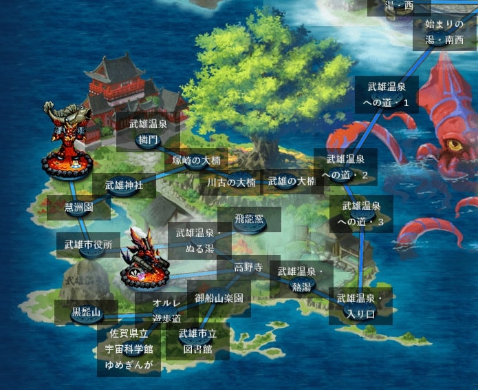
このエリアでは、炎の将魔とベルヴァがボスでした。
アームストロング砲（炎の将魔）
炎の将魔は「アームストロング砲」という技を使ってきました。
佐賀市にある「佐嘉神社」にア―ムストロング砲があります。佐賀県の佐賀と佐嘉神社の佐嘉で字は違うけど読みは同じ ”さが” みたいです。
かつて佐賀藩がアームストロング砲の製造を試みました。アームストロング砲は元々はイギリスのアームストロング社が開発したもので、佐賀藩が実際に製造した砲がアームストロング砲と同等のものだったかについては不明で議論が分かれています。
※Wikipedia アームストロング砲の「佐賀藩での製造の有無」より
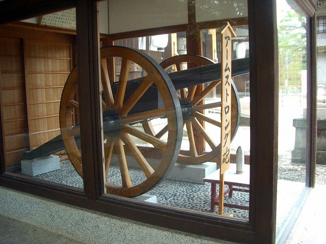
※画像はさがの歴史・文化お宝帳 アームストロング砲より抜粋
佐嘉神社を Google Map で見るとこんな感じ。
参考
ムツゴロウ（ベルヴァ）
ベルヴァが使ってきた技は「びっくりムツゴロウ」
ムツゴロウは有明海のシンボル的な存在。一般的には3月から11月、特に5月から7月は干潟上での行動が特に活発になる生物です。

※写真はあそぼーさが 芦刈海岸ムツゴロウ保護区(小城市)より抜粋
「佐賀市シティプロモーション室」というyoutubeチャンネルでもムツゴロウはネタにされています。
「ガタバトル」～愛の戦士ムツゴロウ～
参考
その他武雄温泉エリア関連情報
西川登竹細工のかご
制圧戦のドロップアイテムになっていた「西川登竹細工のかご」は武雄市で作られているものです。
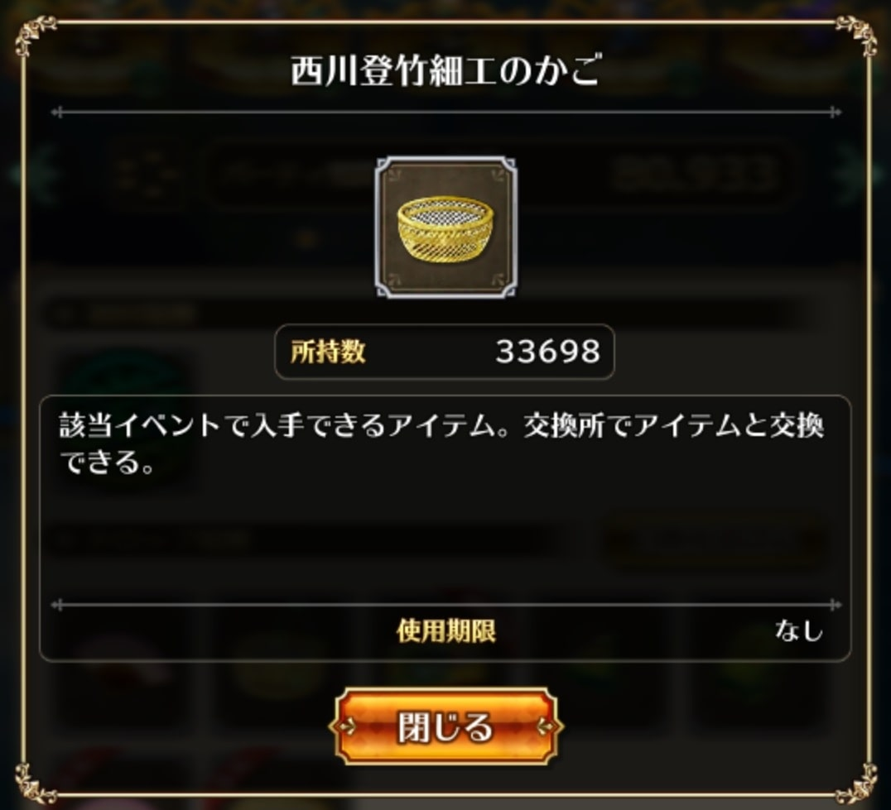
実物の写真。
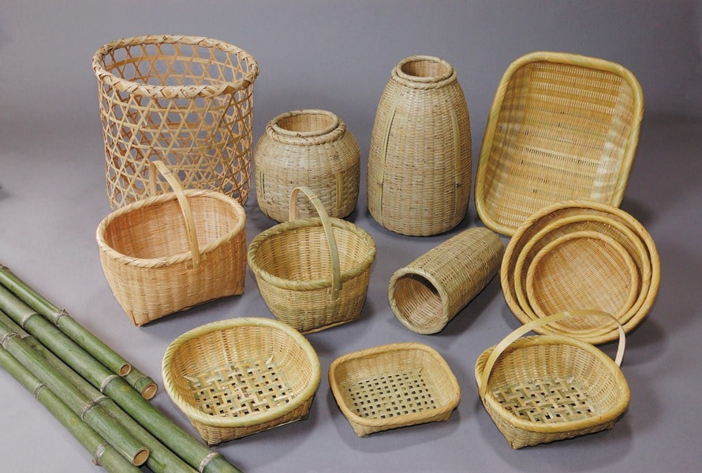
※写真は佐賀県公式 西川登竹細工より抜粋
参考
飛龍窯（ひりゅうがま）
次は「飛龍窯」です。Loading画面になっていました。
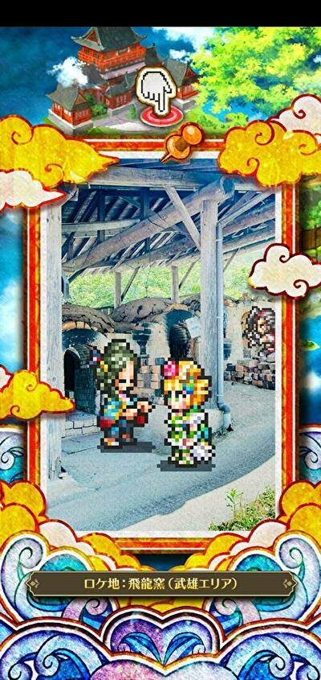
飛龍窯の実際の写真はこちら
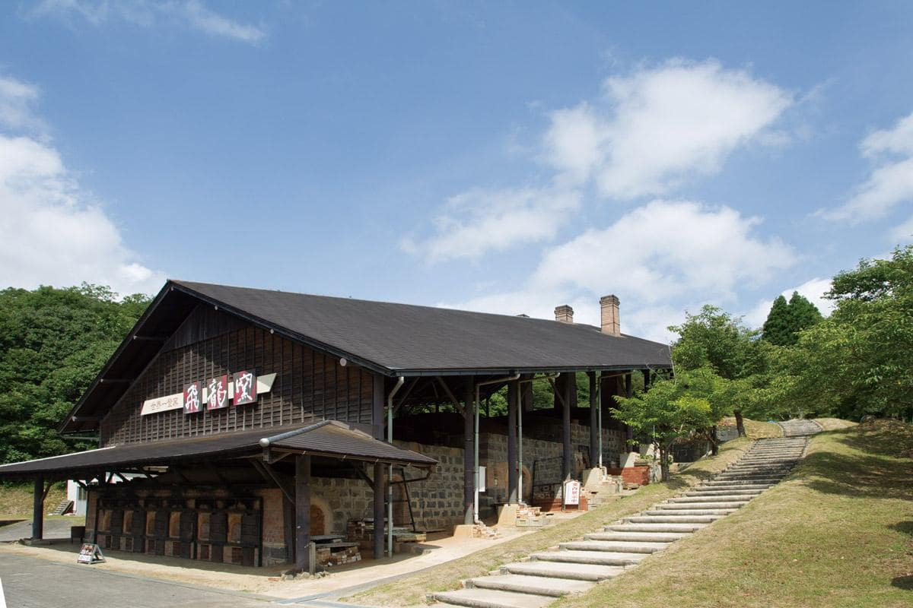
※画像は武雄市観光協会 飛龍窯より抜粋
飛龍窯は、陶芸の里武雄の拠点として作られた世界一の容積を誇る登り窯です。
ゲームの方のサガで焼き物と言えばタリアですよね。Loading画面もタリアを中心にサガスカキャラがいます。
去年の記事にも書きましたが、タリアという名前は、佐賀県有田町発祥の焼き物の『有田焼』からとられているらしいです（アリタを逆から読んだらタリア）。
参考：ニコニコ大百科 タリア
去年のタリア
飛龍窯では毎年バレンタインの時期に灯ろう祭りが開催されるみたいですね（2021年は中止になったようですが）。
約6000本の灯ろうの灯りとイルミネーションで照らされるのだとか。綺麗ですよね。
参考佐賀トラベルサポート 2月:TAKEO・世界一飛龍窯灯ろう祭り
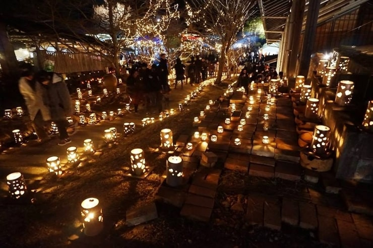
※写真はまいぷれ 【武雄】飛龍窯灯ろうまつりより抜粋
参考
- 武雄市観光協会 飛龍窯
- さがファン 飛龍窯工房
- あそぼーさが 飛龍窯(武雄市)
- たびらい 飛龍窯（ひりゅうがま）｜楽しみながら短時間の陶芸体験／武雄
- まいぷれ 【武雄】飛龍窯灯ろうまつり
- 武雄市観光協会 TAKEO・世界一飛龍窯灯ろう祭り2021
- 佐賀トラベルサポート 2月:TAKEO・世界一飛龍窯灯ろう祭り
- じゃらんニュース
武雄市図書館
次は「武雄市図書館」です。
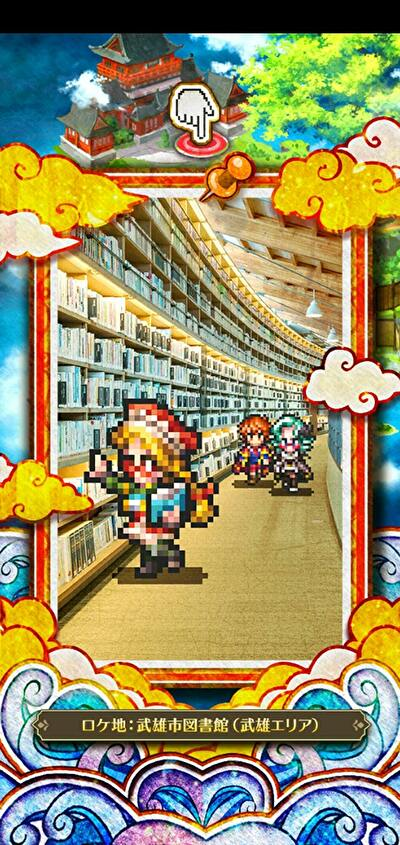
公式サイトの館内MAP・施設案内を見るとわかりますが、かなりデカい図書館です。
武雄市図書館の中を Google Map で見れるみたいなので、その広さを体感してみて下さい。
参考
常楽軒
次は「常楽軒」
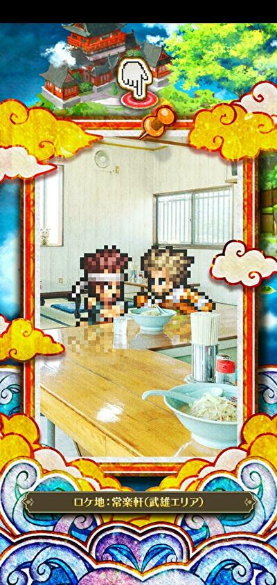
公式サイトが見当たらなかったけど、佐賀では有名なちゃんぽん屋の一つっぽい（？）
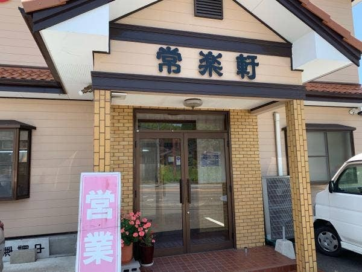
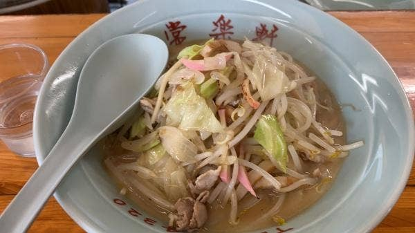
※画像はYahoo 口コより抜粋
武雄温泉橉門（ろうもん）
次は「武雄温泉橉門」
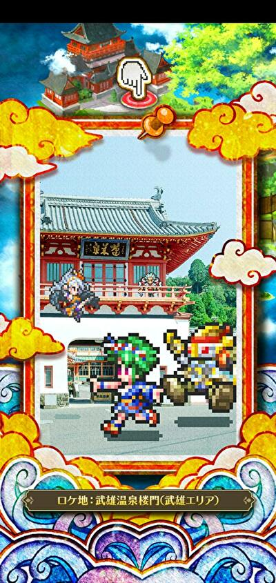
実際の写真はこちら
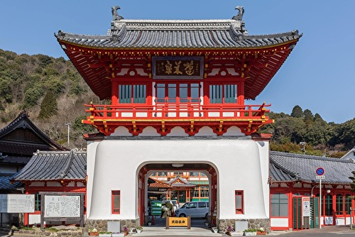
※画像は武雄市観光協会 武雄温泉楼門より抜粋
楼門の奥には大衆浴場があります。明治時代に民営化されたものでノスタルジックな雰囲気が味わえます。大衆浴場の「元湯」と「蓬莱湯」、貸し切りの「家老湯」と「殿様湯」などが楽しめます。温泉街もこの付近です。
夜は↓こんな感じらしいです。コーデリアのスタイル絵の背景に夜の武雄温泉橉門が描かれているので写真を探してみました。
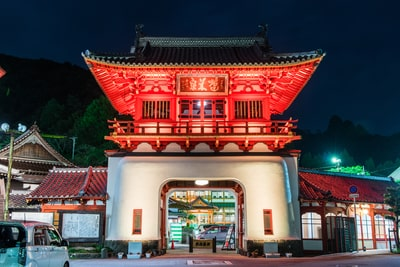
※画像はあそぼーさが 武雄温泉楼門(武雄市)より抜粋
これもGoogle Mapで覗いてみたんですけど、街中に突然現れる感じなんですね。ちょっとびっくりしました。
アルカイザーやコーデリアのスタイル絵にも武雄温泉橉門が書き込まれていました。
アルカイザー
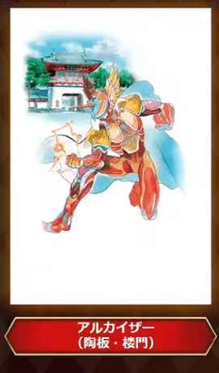
コーデリア
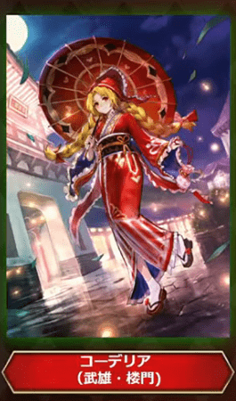
SQUARE ENIX様の「ロマンシング サガ リ・ユニバース」にて、
— daible (@sealmancn) July 30, 2021
『 SSコーデリア 』を描かせて頂きました。
宜しくお願い致します！https://t.co/g6iZ05HS54#ロマサガRS pic.twitter.com/F7q6YXVfMC
武雄温泉物産館
今回新たに実装されたジニーのスタイル絵に武雄温泉物産館が書き込まれていました。

に武雄温泉物産館をGoogle Map で見るとこんな感じ。
これは武雄温泉物産館の公式サイトです
佐賀ジニーのハッピースーベニアのエフェクトは4種類あります。佐賀県の銘菓みたいですね。
スーベニアは"souvenir"という綴りで、「記念品」とか「土産物」という意味です。
#ロマ佐賀 #丸ぼうろ＃小城羊羹#けえらん#松露饅頭#世界の名言2選#ジニー・ナイトワネット
— ルナぱす (@tetsubane_snare) July 31, 2021
パンがなければ佐賀銘菓
たべればいいのに pic.twitter.com/BMjk02tL8U
ハッピースーベニアの4種類のエフェクトを動画に納めました。
けえらん
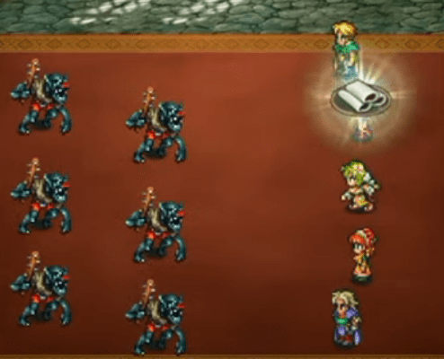
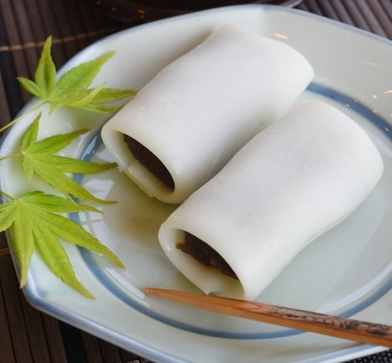
小城羊羹
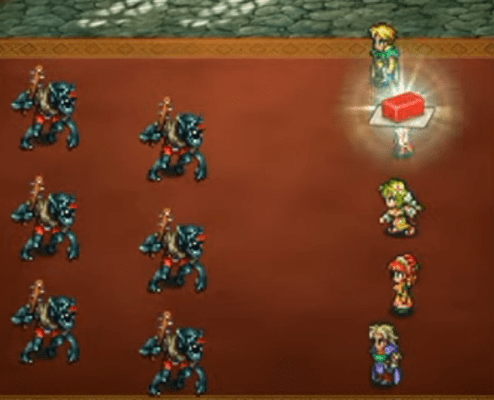
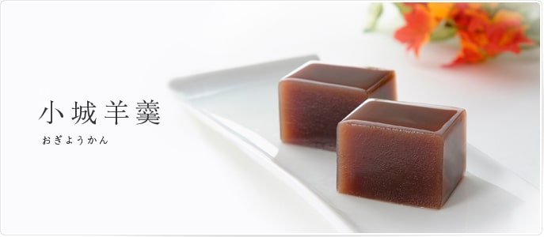
松露饅頭
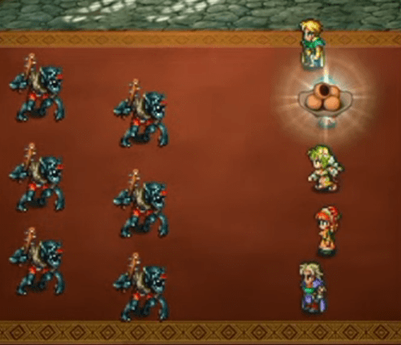
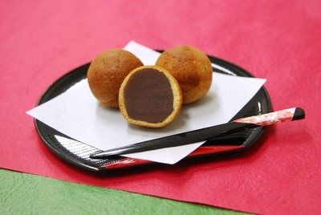
丸ぼうろ
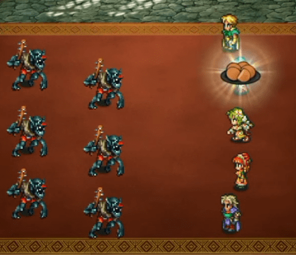
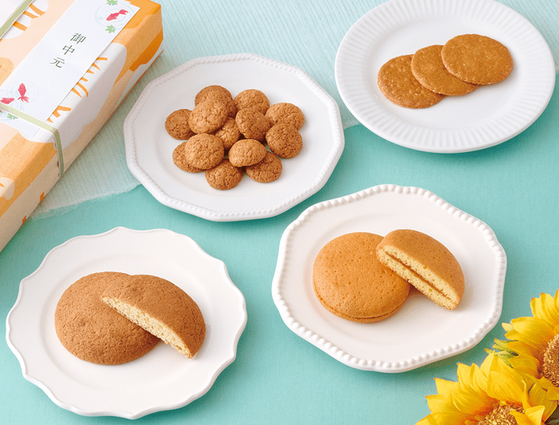
井手ちゃんぽん
アルカイザー（着せ替え）のスタイル絵が井手ちゃんぽんを手に持っていました（これが井出ちゃんぽんであることは以下の竜徹さんのツイートのリプ欄に明記されています）。
【お仕事情報】2021年7月28日に『ロマンシング サガ リ・ユニバース』にて、私が描かせていただきました「[ヒーローのジレンマ]レッド」が佐賀県コラボ配布スキンとして実装されました。
— 竜徹 (@ryuutetusai) July 30, 2021
このスキンに着せ替えて、佐賀県コラボを楽しんでいただけますと幸いです！#ロマサガRS #ロマ佐賀 pic.twitter.com/ePsVoMJO0K
本物の井手ちゃんぽんの画像（公式サイトより引用）
※写真は「井手ちゃんぽん」本店の公式サイトより抜粋
アルカイザーが手に持っている皿や実際の写真を見るとわかりますが、野菜たっぷりでボリュームあるのが特徴のちゃんぽんなんですね。
井手ちゃんぽん本店をGoogle Map で見るとこれ。
参考
大楠（オオクス）
武雄市には大楠があります。制圧戦のマップにも書き込まれているのと、市川さんがツイートしていたので取り上げてみます。
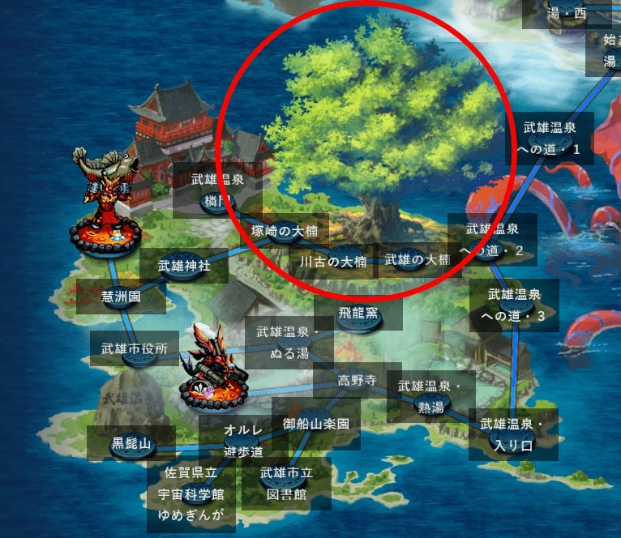
#ロマサガRS 制圧戦のマップにも描かれてますが、武雄市の大楠です。側で見るとパワーもらえる気がします。#ロマ佐賀 pic.twitter.com/SOvjtAVQXV
— 市川雅統 Masanori Ichikawa (@saga_ichikawa) July 29, 2021
武雄市には大楠が３つあり、佐賀県の巨木ベスト3に選ばれるぐらい大きいらしいです。
参考：EDITORS SAGA 【武雄の大楠】佐賀県の巨木ベスト3 ─ 驚きのデカさ！
塚崎の大楠、武雄の大楠、川古の大楠の三つです。制圧戦のマップ上にも3つありますね。
塚崎の大楠
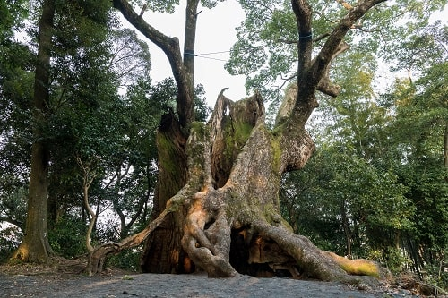
※写真は雄大な自然に癒され、大楠とともに育つより抜粋。
武雄の大楠
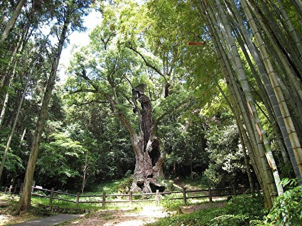
※写真は武雄市観光協会 武雄の大楠より抜粋。
川古の大楠
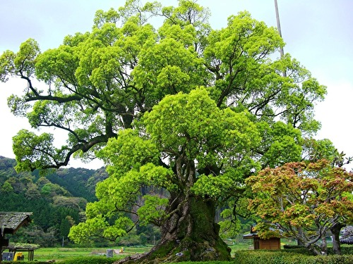
※写真は武雄市観光協会 川古の大楠より抜粋。
イスカンダールは「大楠の太刀」という技を持っていたし、スタイル絵の背景はきっとこの大楠でしょう。どの大楠なのかはわからないですけど・・・
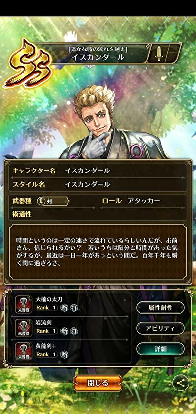
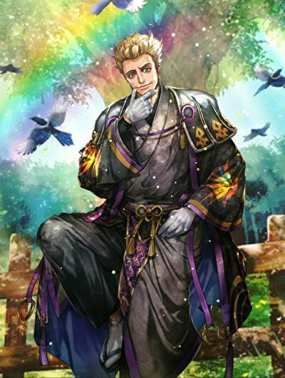
また、セルマの「楠花咲き」はその名の通り楠の花が咲くエフェクトがあります。
「楠花咲き」のエフェクトを動画に収めてみました。
そしてこちらが実際の楠の花の写真です。だいぶ充実に再現されていることがわかりますね。
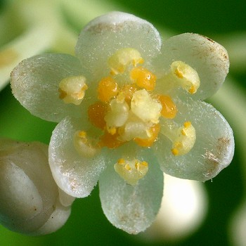
※写真は福原のページ クスノキ(クスノキ科)より
参考
- 雄大な自然に癒され、大楠とともに育つ
- 武雄市観光協会 武雄の大楠
- 武雄市観光協会 川古の大楠
- 武雄市観光協会 塚崎の大楠
- EDITORS SAGA 【武雄の大楠】佐賀県の巨木ベスト3 ─ 驚きのデカさ！
- 福原のページ クスノキ(クスノキ科)
武雄温泉エリアは以上です。よろしければ他のエリアも是非見てみて下さい。
- 2021年佐賀コラボトップ
- 始まりの湯エリア
- 古湯温泉エリア
- 嬉野温泉エリア
- 武雄温泉エリア（今ここ）
- その他